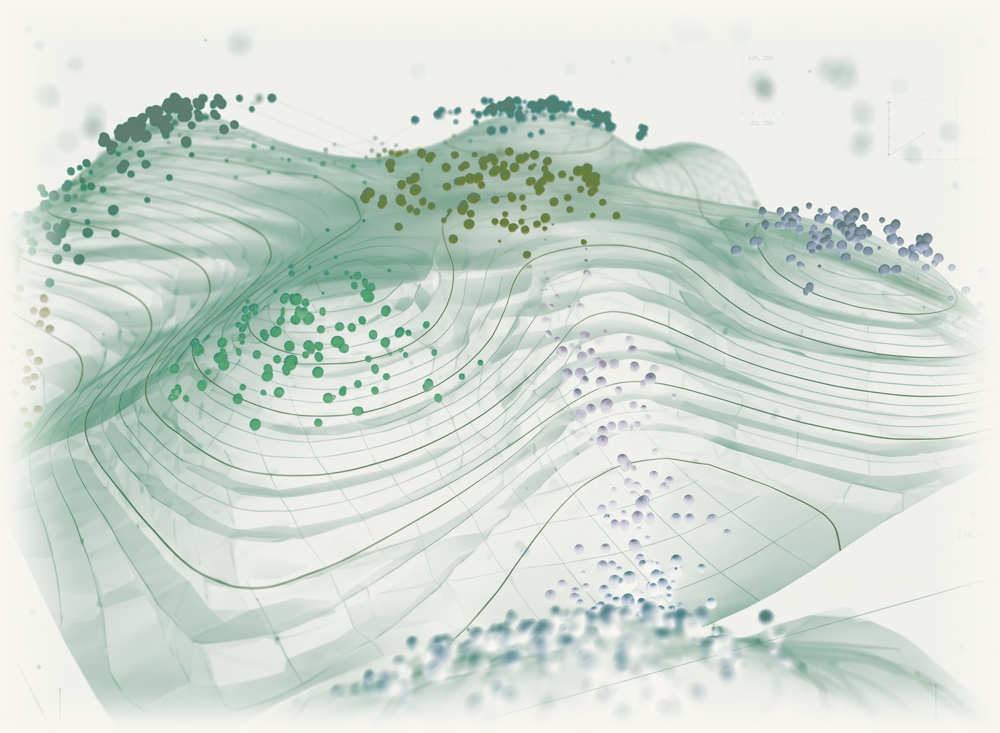

Célula única y espacial
Identidad celular, trayectorias de desarrollo y organización tisular estudiadas mediante transcriptómica de célula única y espacial.
Flujos espaciales · repositorioBioinformago
Single Cell y Spatial
Trabajo en regulación génica y poliadenilación alternativa (APA) a través del análisis de célula única y espacial. Mis intereses computacionales incluyen flujos reproducibles, computación de alto rendimiento y aprendizaje profundo.
Lead Bioinformatician en ZS
Departamento de Computación - Universidad de Buenos Aires

01 / Investigación
Mi trabajo conecta la regulación génica con el análisis celular y tisular, mediante software reproducible y computación escalable.
Identidad celular, trayectorias de desarrollo y organización tisular estudiadas mediante transcriptómica de célula única y espacial.
Flujos espaciales · repositorioProcesamiento del RNA y poliadenilación alternativa como mecanismos de regulación génica postranscripcional, con foco en el uso de sitios de poliadenilación y la diversidad de la región 3′UTR.
scPolASeq · repositorioDesarrollo de flujos de análisis portables con Nextflow, contenedores e infraestructura HPC/GPU para biología computacional.
SVantigen · repositorio colaborativoInterés en aprendizaje de representaciones y métodos de deep learning para datos biológicos, con atención a la evaluación de modelos y la interpretación biológica.
Proyectos públicos de software02 / Software y proyectos
Repositorios públicos para regulación del RNA, análisis de célula única y espacial, junto con desarrollo colaborativo de flujos de análisis. Los artículos relacionados se enlazan cuando están disponibles.
Destacado / Regulación génica y APA
Pipeline de Nextflow para descubrir y cuantificar poliadenilación alternativa en RNA-seq de célula única, desde la reconstrucción de lecturas hasta el análisis de cobertura.
Ver repositorioProyecto personal
Paquete de Python para el análisis downstream de scPolASeq, que integra anotación celular, uso de sitios de poliadenilación, análisis de enriquecimiento y notebooks reproducibles.
Proyecto personal
Herramientas de Python para visualizar el uso de sitios de poliadenilación, cobertura genómica, modelos de genes y perfiles de metagenes.
Experimental
Marco experimental para construir redes regulatorias candidatas de la región 3′UTR a partir de scPolASeq, integrando uso de sitios de poliadenilación, anotaciones y predicciones basadas en secuencia.
Colaboración · Novo Nordisk y ZS
Flujos de trabajo de ómicas de célula única y espaciales desarrollados en colaboración con Novo Nordisk y ZS. Repositorio original de NovoNordisk-OpenSource; artículo publicado en 2026.
Investigación · García Solá et al.
Datos y código del atlas de la glándula mamaria posnatal de ratón de 2021, junto a Micaela Stedile, Inés Beckerman y Edith C. Kordon.
Colaboración comunitaria
Flujo colaborativo que explora variantes estructurales y neoantígenos candidatos. Desarrollado con el equipo de collaborativebioinformatics; la predicción de neoantígenos sigue siendo trabajo futuro.
03 / Publicaciones
Papers seleccionados sobre análisis de célula única y espacial, regulación génica y biología del cáncer.
Computational and Structural Biotechnology Journal · 35(1), 0164
Breast Cancer Research · 24, 30
Journal of Mammary Gland Biology and Neoplasia · 26, 29–42
Frontiers in Oncology · 11, 687629
Nucleic Acids Research · 48(12), 6824–6838
04 / Docencia
Docencia universitaria y formación práctica en bioinformática, análisis de secuenciación y programación para investigación biológica.
Recursos educativos abiertos en español para estudiantes y profesionales que exploran la bioinformática.
Explorar los materialesDocencia en el Departamento de Computación (DC), Facultad de Ciencias Exactas y Naturales, Universidad de Buenos Aires.
Docente del equipo NGS LATAM en cursos organizados por Wellcome Genome Campus Advanced Courses.
Organización y docencia de un curso de R para ciencias biológicas.
Buenos Aires, Argentina
05 / Sobre mí y contacto
Soy bioinformático, con formación en biología molecular y un doctorado de la Universidad de Buenos Aires. Mi trabajo integra investigación biológica, análisis computacional y desarrollo de software científico.
Mi investigación abarcó biología de la glándula mamaria, oncogénesis viral y regulación del RNA. Actualmente me interesan la regulación génica, incluida la poliadenilación alternativa, y su estudio mediante transcriptómica de célula única y espacial.
Trabajo como Lead Bioinformatician en ZS y soy docente del Departamento de Computación (DC), Facultad de Ciencias Exactas y Naturales, Universidad de Buenos Aires. Mis intereses computacionales incluyen flujos reproducibles, computación HPC/GPU y aprendizaje profundo.